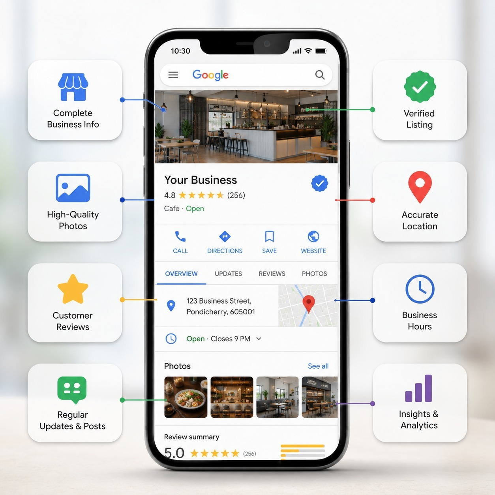
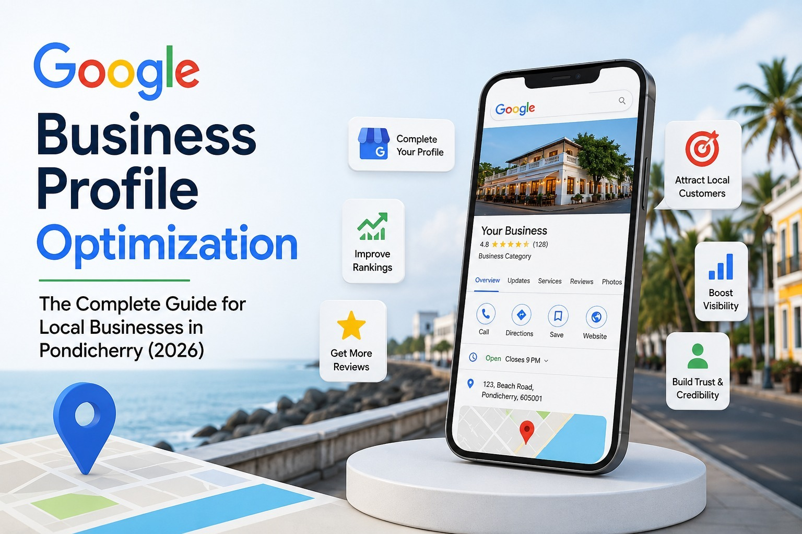
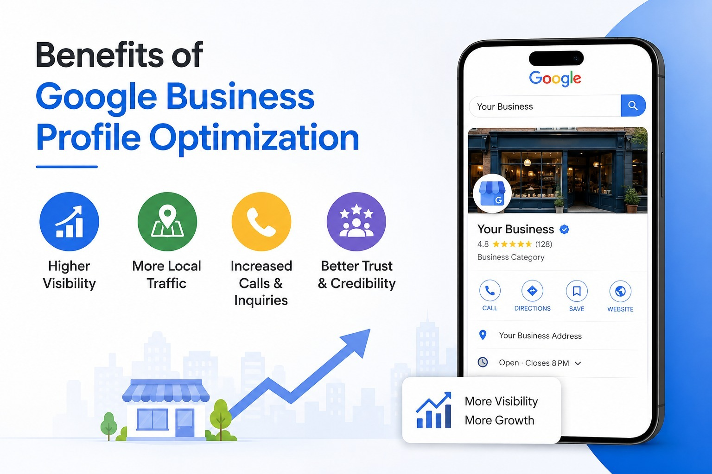
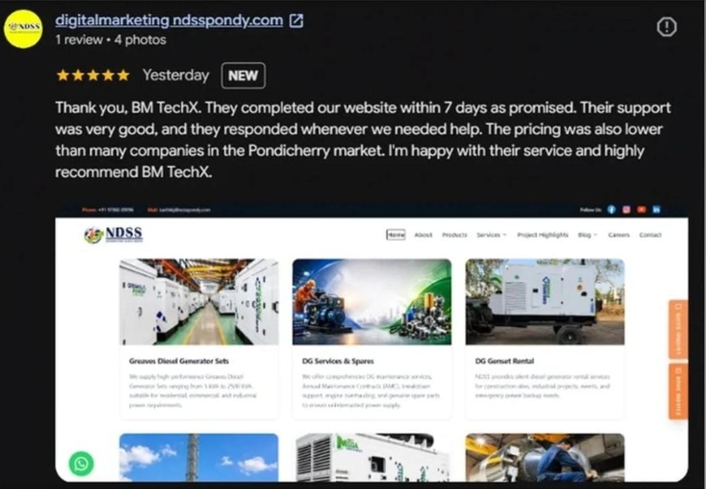

Google Business Profile Optimization: The Complete Guide for Local Businesses in Pondicherry (2026)

If your business isn't on Google Maps, you're missing customers every single day.
Quick Answer
Google Business Profile optimization helps your business appear higher on Google Search and Google Maps when customers search for products or services nearby. By optimizing your profile with accurate information, reviews, photos, services, and regular updates, you can attract more local customers, increase calls, get more direction requests, and grow your business in Pondicherry, Cuddalore, and Villupuram.
Why Google Business Profile Optimization Matters in 2026
Think about your own buying habits. When you need a Restaurant, Dental Clinic, Salon, Water Purifier Dealer, Boutique, Interior Designer, Builder, or Digital Marketing Agency — what's the first thing you do? You open Google and search.
Examples: "Best restaurant in Pondicherry," "Dentist near me," "Boutique in Cuddalore," "Builders in Villupuram."
The businesses you see on Google Maps usually receive the most attention. If your business isn't visible there, you're missing potential customers every single day. That's why Google Business Profile optimization has become one of the most important digital marketing strategies for local businesses.
What is Google Business Profile?
Google Business Profile (formerly Google My Business) is a free business listing provided by Google. It displays important information such as Business Name, Address, Phone Number, Website, Business Hours, Reviews, Photos, Products, Services, FAQs, and Directions.
Your profile appears on both Google Search and Google Maps, helping nearby customers discover your business.
What is Google Business Profile Optimization?
Creating a profile is only the first step. Optimization means improving every part of your listing so Google understands your business better and customers trust it more. It includes completing every business detail, selecting the right categories, adding high-quality photos, posting regular updates, responding to reviews, updating products and services, answering customer questions, and maintaining accurate information.
A fully optimized profile is far more likely to appear in local search results than an incomplete one.
Why Local Businesses in Pondicherry Need Google Business Profile Optimization
Pondicherry has become one of Tamil Nadu's fastest-growing business destinations. Every day, thousands of people search Google for local services — whether you're located in White Town, Lawspet, Muthialpet, Villianur, Reddiarpalayam, Mudaliarpet, or nearby areas like Cuddalore and Villupuram, customers are already searching online.
If your Google Business Profile is optimized, your chances of attracting those customers increase significantly.
Benefits of Google Business Profile Optimization

Higher Visibility on Google Search
Optimized profiles have a better chance of appearing when customers search for related services. Example: someone searches "Best beauty parlour in Pondicherry" — Google displays businesses with complete and active profiles first.
Better Google Maps Ranking
Many users don't even visit websites. They choose directly from Google Maps. An optimized profile helps improve your visibility in local map results.
More Phone Calls
Customers can call directly from your profile with a single tap. The easier you make it to contact you, the more enquiries you are likely to receive.
More Website Visits
Your profile links directly to your website, helping interested customers learn more about your business.
Increased Walk-in Customers
Businesses such as restaurants, clinics, retail shops, and salons often receive more direction requests through Google Maps after optimizing their profile.
Builds Trust
Customers naturally trust businesses that have positive reviews, updated photos, complete business details, and active responses to reviews. A professional profile gives confidence before customers even contact you.
What Should an Optimized Google Business Profile Include?
Accurate Business Information
Always keep updated: Business Name, Address, Phone Number, Website, Working Hours. Incorrect information can lead to lost customers.
Business Categories
Choosing the right primary and secondary categories helps Google understand your services. For example, a dental clinic should not simply select "Health." Instead, choose Dentist, Dental Clinic, Cosmetic Dentist (if applicable). Relevant categories improve local search visibility.
Professional Photos

Customers trust businesses that regularly upload photos. Recommended images include office exterior, interior, staff, products, services, customer experience, and team activities. Fresh photos show that your business is active.
Products and Services
Add detailed descriptions for each product or service you offer. Instead of "SEO," use "Local SEO Services for Small Businesses in Pondicherry." Detailed information helps both customers and Google.
Regular Posts
Posting updates keeps your profile active. You can share new services, festival offers, customer testimonials, business achievements, educational tips, and events. Consistency signals that your business is active and engaged.
Customer Reviews

Reviews influence both rankings and customer decisions. Encourage satisfied customers to leave genuine reviews. Always respond politely — whether the feedback is positive or negative. Thoughtful responses build trust and show professionalism.
Questions & Answers
Many businesses overlook this feature. Adding frequently asked questions helps customers find quick answers while also improving the usefulness of your profile.
Google Business Profile vs Website
| Google Business Profile | Website |
|---|---|
| Free to create | Requires development and hosting |
| Appears in Google Maps | Appears in Google Search |
| Ideal for local searches | Ideal for detailed information |
| Shows reviews | Builds brand credibility |
| Enables direct calls | Generates enquiries through forms |
| Great for nearby customers | Supports SEO and long-term growth |
| Easy to update | More customization available |
The best strategy is to use both together for maximum online visibility.
Common Mistakes Businesses Make
Many local businesses create a profile but never optimize it. Some common mistakes include:
- Wrong business category
- Missing phone number
- No website link
- Outdated working hours
- Poor-quality photos
- Very few reviews
- No responses to customer feedback
- No regular posts
- Duplicate listings
- Inconsistent business information across platforms
Fixing these issues can make a noticeable difference in local visibility.
Real Example: A Restaurant in White Town
Imagine a family restaurant in White Town. Before optimization: only a few reviews, outdated photos, incorrect timings, no posts, and few calls.
After optimization: updated menu photos, weekly offers posted, positive review responses, correct business hours, and optimized categories.
The restaurant starts receiving more direction requests, more calls, better Google Maps visibility, and increased customer enquiries. This illustrates how a well-maintained profile can improve local discovery.
Why Women Entrepreneurs Should Optimize Their Google Business Profile
Many successful businesses today are started from home — home bakers, handmade jewellery sellers, boutique owners, tailors, beauty professionals, and home catering services.
A Google Business Profile allows these businesses to become discoverable when local customers search online, helping them compete with larger brands without needing a large advertising budget.
Why Google Reviews Matter
Reviews are one of the strongest trust signals. Customers often compare ratings, number of reviews, owner responses, and photos before making a decision. A business with consistent positive reviews and active engagement usually stands out.
Remember: Never buy fake reviews. Genuine customer feedback builds long-term credibility.
Why Choose BM TechX for Google Business Profile Optimization?
At BM TechX, we help businesses improve their visibility on Google Search and Google Maps through structured Google Business Profile optimization. Our services include:
- Google Business Profile Setup
- Profile Verification Support
- Business Information Optimization
- Category Selection
- Product & Service Listings
- Photo Optimization
- Weekly Google Posts
- Review Management Guidance
- Local SEO Support
- Google Maps Performance Improvements
We work with businesses across Pondicherry, Cuddalore, and Villupuram, helping local brands attract more calls, website visits, and walk-in customers.
As part of the ABM ecosystem, our learning partner BM Academy has successfully trained more than 1,400 learners and helped 150+ students secure real job opportunities. This practical industry experience helps us apply current digital marketing strategies that benefit local businesses.
Our focus is simple: More Visibility → More Trust → More Enquiries → More Business Growth.
Frequently Asked Questions
1. What is Google Business Profile optimization?
It is the process of improving your Google Business Profile by updating business information, photos, services, reviews, and regular posts to increase visibility on Google Search and Maps.
2. Is Google Business Profile free?
Yes. Google Business Profile is free to create and manage.
3. How long does it take to see results?
Many businesses notice improvements within a few weeks, especially after adding complete information, fresh photos, reviews, and regular updates. Long-term consistency delivers the best results.
4. Can I rank higher on Google Maps with optimization?
Yes. A complete, accurate, and active profile improves your chances of appearing in local map results, although rankings depend on several factors including relevance, distance, and prominence.
5. How many photos should I upload?
There is no fixed number, but regularly adding high-quality photos of your business, products, team, and services helps keep your profile fresh and engaging.
6. Why are customer reviews important?
Reviews build trust, influence customer decisions, and contribute to stronger local visibility when managed properly.
7. Can home-based businesses use Google Business Profile?
Yes. Home-based businesses such as boutiques, bakeries, beauty services, and consultants can create a profile while following Google's eligibility and address-display guidelines.
8. Do I need a website if I have a Google Business Profile?
A Google Business Profile is valuable on its own, but combining it with a professional website provides better credibility, stronger SEO, and more opportunities to convert visitors into customers.
9. How often should I update my profile?
Aim to update your profile regularly with new photos, business posts, offers, and accurate information whenever something changes.
10. Does BM TechX provide Google Business Profile optimization outside Pondicherry?
Yes. BM TechX also helps businesses across Cuddalore, Villupuram, and nearby locations improve their Google Business Profile and local search visibility.
Final Thoughts
For local businesses, Google Business Profile optimization is no longer optional — it is an essential part of being found by today's customers. Whether you own a restaurant, clinic, boutique, salon, construction company, coaching centre, or home-based business, an optimized profile can help you appear in local searches, build trust, and generate more enquiries.
When combined with a professional website, local SEO, and quality customer service, your Google Business Profile becomes one of the most powerful tools for long-term business growth.
🚀 Get Your FREE GMB & Website Audit
Want to know how your business performs on Google? Our experts will review your Google Business Profile and website, identify opportunities for improvement, and prepare a customized proposal to help you grow online.
- ✅ FREE Google Business Profile Audit
- ✅ FREE Website Audit
- ✅ Customized Growth Proposal
Let's optimize your online presence and help your business attract more local customers across Pondicherry, Cuddalore, and Villupuram.